极点边缘形状相对弱势造成走势不同
- 如果出现了相对弱势，它一定会超过弱势的起点，如果是逆势，那么会刚刚超过就下来。如果是顺势，那么
会大大超过。如果它只是接近，就返回，那么未来会大大超过。这个类似两段走势的情况。这个走势也可以反过来
验证对大势的判断是否正确。
- 如果出现了相对弱势，它一定会超过弱势的起点，如果是逆势，那么会刚刚超过就下来。如果是顺势，那么
会大大超过。如果它只是接近，就返回，那么未来会大大超过。这个类似两段走势的情况。这个走势也可以反过来
验证对大势的判断是否正确。
- 相对弱势走势，它一定要走出一个新高或者新低，或者自身走出一个走势。不能看到它是相对弱势，就立刻去做。
- 相对弱势，包括走平时间不同，如果都是立刻拉回，那么拉回的角度不同，都会造成相对弱势或者相对强势。
- 相对弱势，会造成大盘填补真空，而不是反转，而相对强势，会造成大盘彻底反转。
- 有些走势在盘后也会完成反转或者不反转，不要看到盘中不反转，就以为不是这样。
快速大幅下跌的应用分析
其他分析
走平时间高点低于低点，即使幅度超过也不行。
相对弱势没有越过弱势的起点，就返回，说明
未来会大大超过起点
大盘处于逆势，刚刚越过相对弱势的起点就返回了
加速上涨后，顶部出现相对弱势，
填补真空后，继续上涨,不会反转
加速上涨后，顶部出现相对强势，会全部反转
第二浪也是尖锐，但是尖锐程度不如第一浪，
形成了全面反转
相对弱势的次序问题
相对弱势的次序问题
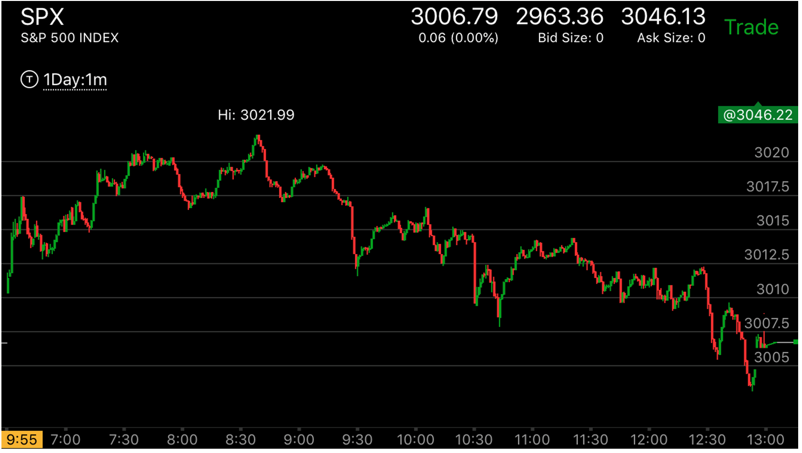
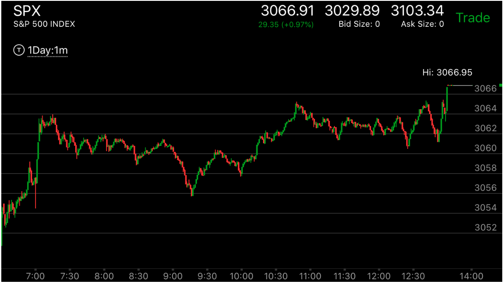
图示：第一张图有三个顶点，第一个很弱，第二个很强，8：30出现第三个比第一个强，比第二个弱，
这个全面反转。因为第一个太弱。第二张图有三个顶点，第一个很强，第二个很弱，7：00的顶点比第一个弱，比第二个强。大盘会部分反转。
反转低于第二个顶点。
第二浪也是尖锐，但是尖锐程度不如第一浪，形成了全面反转
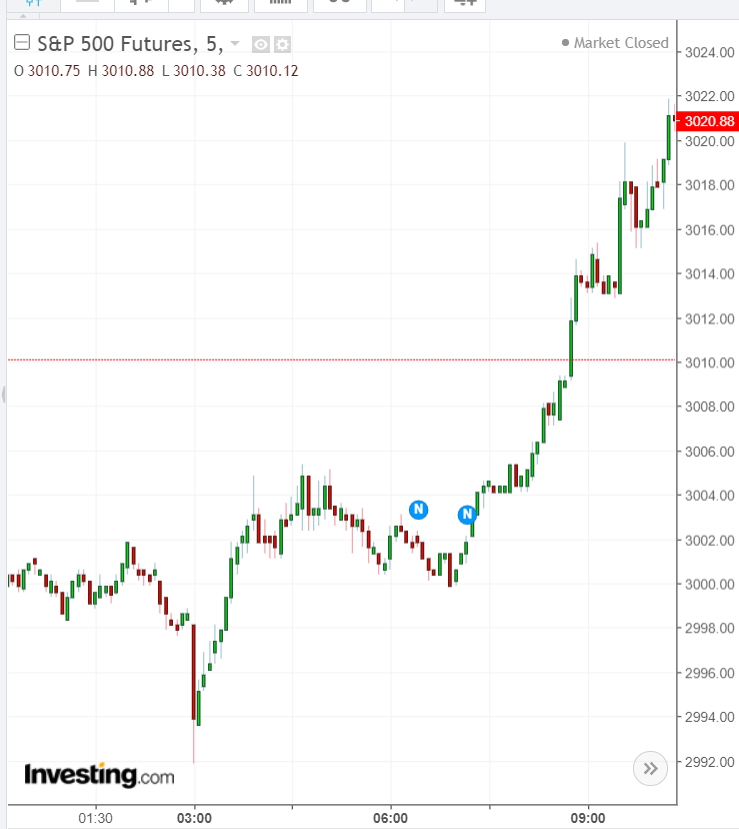
图示：这个走势在盘前不断走高，开盘后，大幅冲高，开盘几分钟后，从新高立刻返回，说明这个不是高点。但是关键在于它会回到哪里。观察盘前走势，
它在9：00是一个走平点。冲高后，这个拉回点恰好是走平点的上沿。这样符合跨越走势。这样3012.5对应的期货3015.它在回调后，继续走高。但是从开盘后的走势看，它上涨很快。不断的跨越。
7：30再次跨越后，上涨。走平。这个就已经符合了反转的条件。因为它是相对的强势。
它在7：50很快的大幅下跌。说明跌的太快了。又开始不断的走高。创新高。它在新高的下跌速度明显低于6：45的下跌速度。
这样它是两个尖端都尖锐，而第二浪不如第一浪尖锐。第二浪不能和7：30的走平浪相比。第一浪的拉回最重要。
加速上涨后，顶部出现相对强势，会全部反转
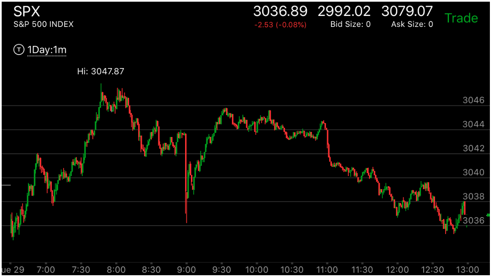
图示：6：50的上涨，新高后，立刻拉回，然后再不断走高。形成了多段上涨。到了高点，它在高点走平。
特别是第二个高点8：00，走平几分钟，这样形成了相对强势。它一定会反转这个两段走势。实际上，它在第二天跌到了两段走势的
开始点以下。
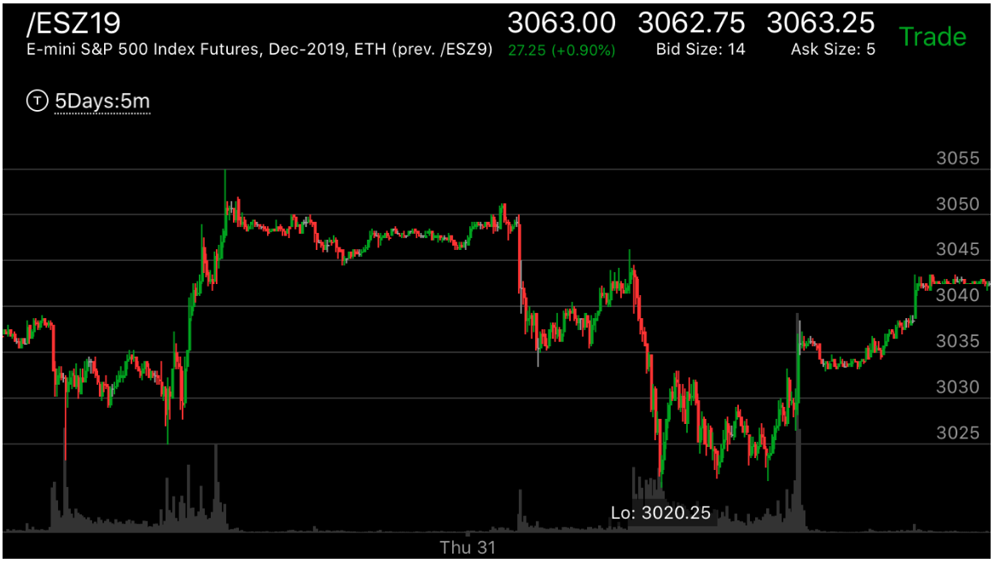
图示：这个是一个收盘后反转的例子，它在盘中不断上涨，收盘涨到了3045.没有反转，
收盘后，继续上涨，然后在高点走平很久。这样就成了相对强势，它一定会下跌。它在经过一夜的运行后，一开盘，就不断的下跌。
一口气跌倒了3020. 然后才反转，但是反转用了一天的时间，都在底部震荡。直到收盘前才开始上涨到了3035.
收盘后，它在高点走平，然后拉回。看起来似乎是相对强势。但是由于它已经反转了。一定要超过至少3044.
另外它走平后，时间不长，立刻走低，在3034走平很久。这样也是填补了一定的真空。刚刚高于前面的高点。也是一种相对弱势。
因为它在低处停留时间很长。再次上涨后，在3042的地方停留很久。这个也不能是算是相对强势，因为它刚刚低于目标价格，
显示它会大涨。所以一定要走出前面走势的范围才算强势或者弱势。
加速上涨后，顶部出现相对弱势，填补真空后，继续上涨,不会反转
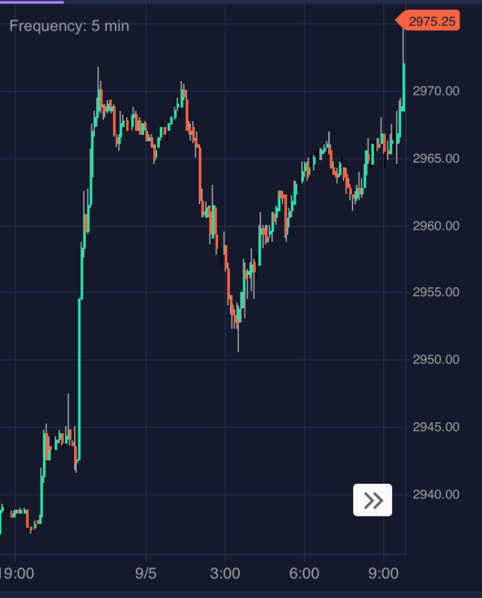
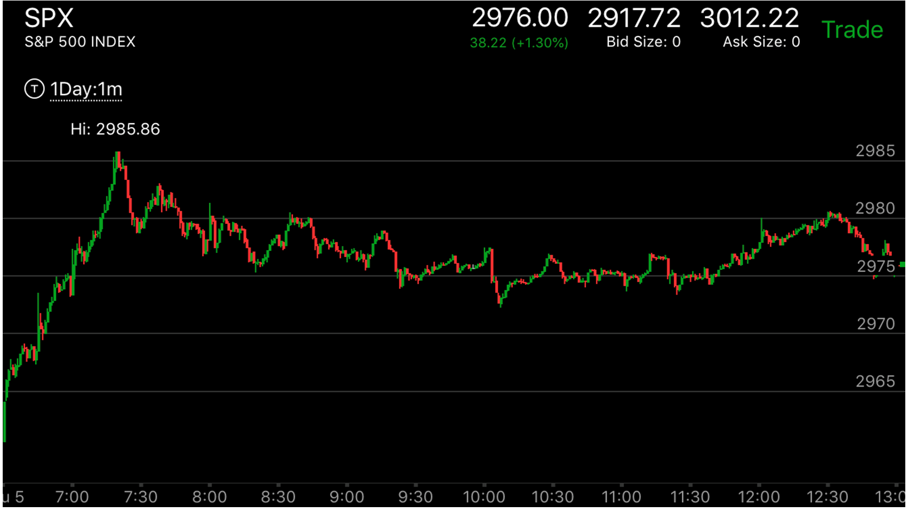
图示：盘前加速大涨。然后走平。这个应该会大跌的。结果它跌一下后，再次反弹，然后快速大跌。观察它的跌势。它的第二个顶的跌势远远高于第一个。说明未来这个不是顶部。
而开盘后，它不断冲高，第一浪就是6个点。然后缓慢走高。最后大涨。这个符合要创盘前走势新高的判断。说明盘前走势出现这个相对弱势也是可以起作用的。
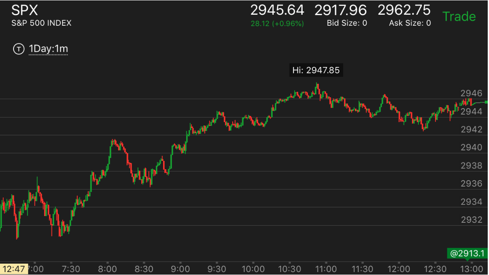
图示：8：00创新高后，它走平，稍微下跌，然后反弹一下，接近前面高点，立刻回调。速度很快。
这样，第二个的高点更弱。表示这个不是顶部。未来还会上涨。
大盘处于逆势，刚刚越过相对弱势的起点就返回了
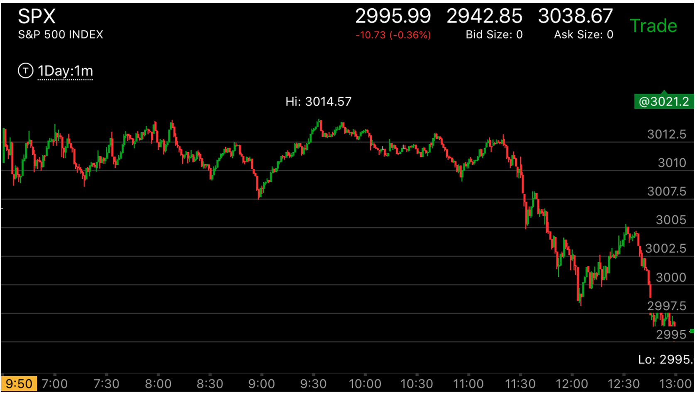
图示：大盘处于跌势，但是8：10出现了相对弱势走势，这个相对弱势有两重。
7:30它快速拉回，再次上涨后，走平，相对强势。应该反转。但是它8：10再次冲高，然后立刻下跌，下跌
程度弱于7：30.这样，它一方面要
反转，创新低，另外，它本身是相对弱势。所以它会创新低后，回头，而且一定要回到比8：10高点要高。
9：00创新低后，然后快速拉回。这个本身也构成了一个贯通走势。就是速度很快的从最低到了最高点。
然后刚刚超过走势的起点。就反转了。这个也说明了，相对弱势一定要超过。但是在逆势，会刚刚超过就回来。
相对弱势没有越过弱势的起点，就返回，说明
未来会大大超过起点
TOP

图示：7：30到达底部它在底部停留的时间，超过7：00的底部，说明是真的底部了。
7：00在底部停留的时间低于6：55的底部。说明不是底部。它会填补真空后，再次走低。7:30开始上涨，然后走平时间，
超过了20分钟。看它后面的走平都没有超过这个时间的。到了9：00，它出现了尖锐的上涨后，立刻下跌。它不会反转，
而是填补真空。因为走平时间不如7：40的走平时间。9:00是相对弱势的起点。它一定会超过的，结果它一直没有超过，
而且接近后，大幅撤回。这样，它未来会大幅的超过。
走平时间高点低于低点，即使幅度超过也不行。
TOP

图示：10：20开始第一浪上涨，10：40它走平很久，这样就很坚实。
11：30再次上涨，它立刻拉回，再次上涨后， 1：10它在高点走平，走平时间不如10：20的，但是明显超过了12：00
，因为12：00是一个尖锐的拉回。这样它反转后，它会高于2550这个长时间走平的点。形成了部分反转。

图示：开盘后，大幅冲高，在7：00附近，它已经处于反转状态，
但是它的边缘是立刻下跌。一般这样不是一个顶部，它继续缓慢走高，直到7：20它冲高后，在高点停留，
这样才是一个顶部的样子，开始下跌。
快速大幅下跌的应用分析
TOP
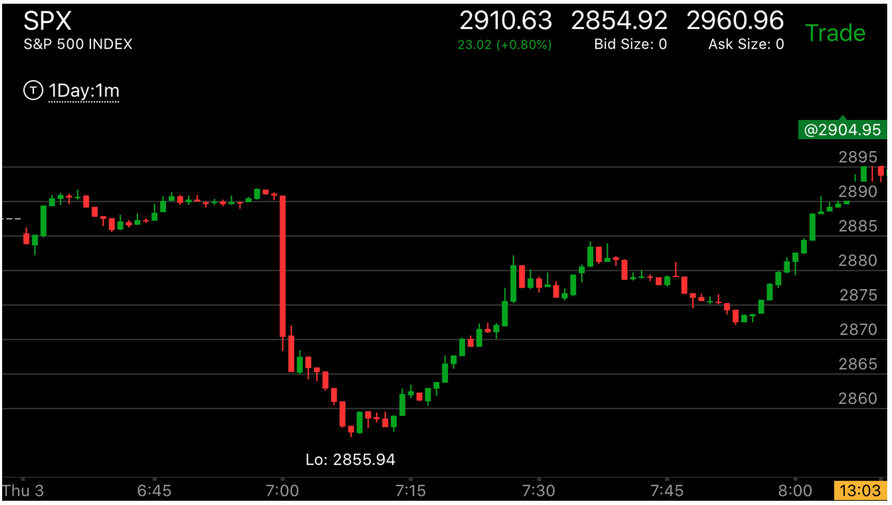
图示：这个走势，一开始下跌，是跌势。它在高点。7分钟的时候，下跌，然后反弹，
回到高点，再一次小幅下跌，又回到高点。这个表示相对下跌很弱。表示未来会大跌。结果它回到高点后，时间很短，
短于第一次下跌的时间，就大跌了。第一次下跌的时候，它在高点停留了4分钟，而大跌的时候，它也从
最高点出发，只停留了3分钟。而跌幅大的多。这个表示下跌相对太强了。说明第二个顶点太弱。
这样未来一定会涨回去的。虽然这个跌势其实是另外一个更大跌势的收尾动作。但是这个本身也表示了要涨。
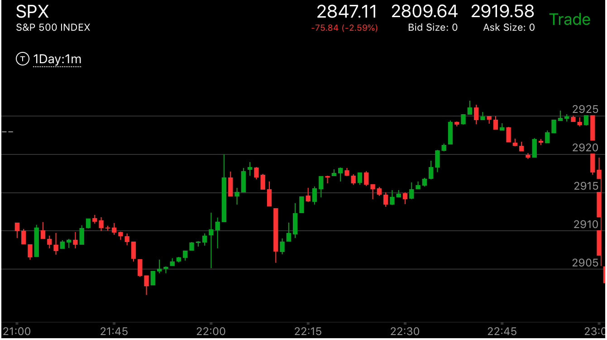
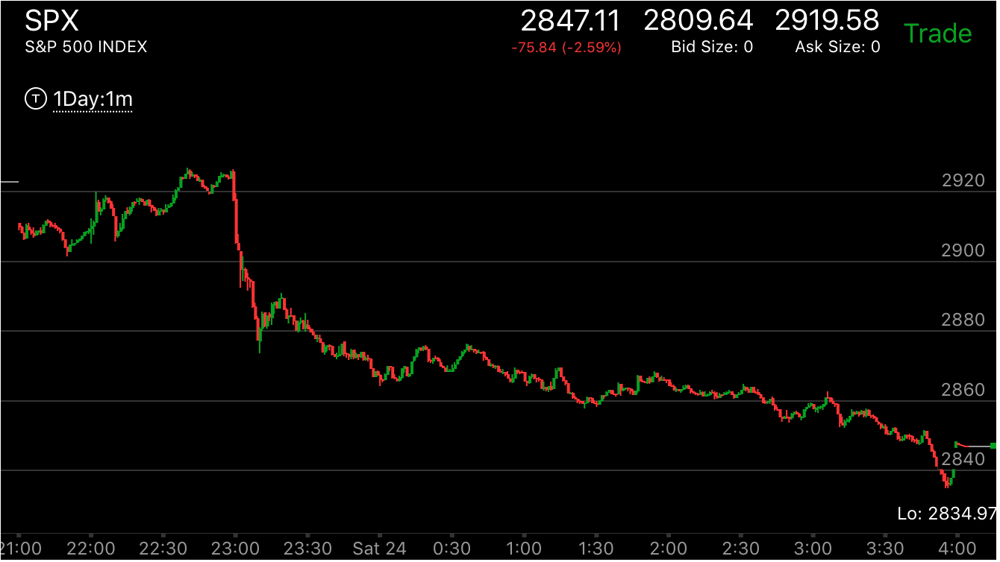
图示: 观察22：40和22：50两个顶点的特点，22：40的顶点比较尖锐，它上去后，很快下来，
而22：50的顶点很平缓。它在停留了几分钟，而且最后还冲高一下。这样它大跌后，不会回到原位。不会反转。

图示: 观察6：50和8：00下跌前的情况，8：00下跌前在高处停留的时间很长，
而6：50停留的时间很短。说明8：00的下跌不会回到原位。虽然这个同时也可以用8：30下跌后，反弹中出现走平
后上涨的解释。这个本身也说明各种迹象是相互配合的。
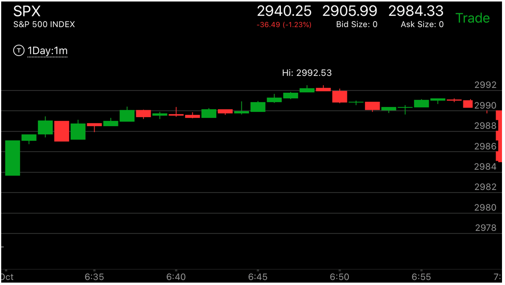
图示:这个走势，它可以理解为没有两次下跌作为比较。所以它下跌后，没有再回来。
也可以勉强来分析一下。第一次下跌从最高点下来。没有任何停留时间。立刻下来。第二次下跌。停留了几分钟。
这样说明第二次下跌更加强大。未来不会反弹回来。
其他分析
TOP

图示：开盘出现了两段走势，它应该反转，但是在7：10， 它又出现了新高后，立刻拉回。
这样就形成了相对弱势。它这时一定要创新低，反转两段走势。但是两段走势结束后，它一定会创新高。
超过走势的开始。

图示：开盘后，出现了两段上涨走势。6:45高点，它立刻拉回，这样它只会填补真空，
不会反转，创新高后，走平。这样，它再次下跌就不是相对弱势，不会再回来了。

图示：开盘后，连续下跌两个bar，说明处于跌势。6：35，快速反弹，但是没有新高，
它开始下跌。6：40开始的下跌，幅度很大，超过了开盘的下跌幅度。这样其实走势已经处于反转状态。
但是它立刻反弹，然后走低，走更低后，缓慢反弹。在低点的反弹速度远低于6：45反弹的速度。这个就是一个相对的强势，
属于真实的底部，未来会大涨，也不会再回来了。

图示：8：00快速下跌后，它的上涨速度更快。直接快速越过前面的高点。这说明大盘要反转。
但是它没有立刻反转。而是立刻回调。回调后，缓慢越过前面的高点，走平。这个其实就是一个加速走势。
前面到达高点后，立刻回调，而这个稍微超过高点后，没有回调，而是走平。而大盘已经处于反转状态。
所以会大跌。

图示：开盘冲高后，下跌，走出了几段走势后，出现了一个两段走势。其实就反转了。它在高点不断的走平。这个高点和6：45的高点相比，非常的平。表示下跌很弱。这样。
它开始下跌后，会跌破前面的低点。

图示：7：10拉回后，冲高，然后停留在前面高点的附近不到高点。开始走平。这样就表示相对比较弱。一定会创新高的。但是大盘处于跌势。所以它创新高后，就拉回，反转了。
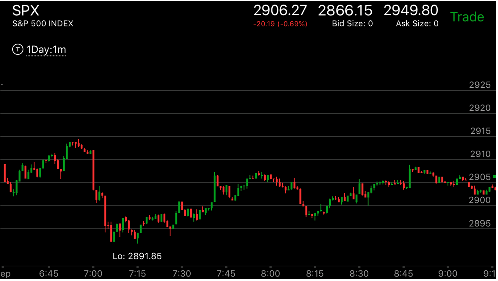
图示：根据盘前走势，判断大盘处于跌势，开盘后，连续下跌，然后开始反弹，它的反弹速度和下跌一样，所以没有加速。这样不能做空。它到了高点，立刻走低，
幅度很大。这个表示弱势，再次上涨，不到前面高点。6：40再次冲高，速度不大，没有加速，再次快速走低。直到6：47，它快速上涨，速度很快，幅度恰好和开始上涨的幅度一样或者稍微超过。而在高点走平。
这样就形成了加速走势。它一定会下跌的。大跌后，7：10形成了两段下跌走势。形成了反转。处于升势。
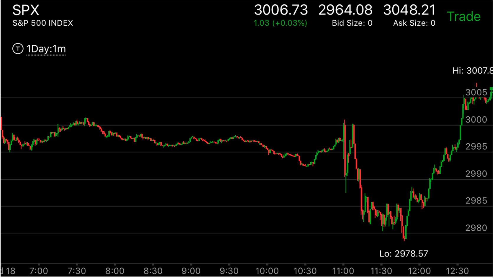
图示：10:30创新低后，走平反弹，返回原来的位置。11:00它大幅下跌，低于原来的低点。但是立刻反弹。这个和前面的低点不一样。前面的低点是在底部走平的。说明这个也不是底部。
未来一定会低于这个点的。11：20它果然创新低，然后在底部走平很久，然后不但没有反弹，反而继续走低，创新低。这样就形成一个更弱的底部。根据反直觉的原理。这个就是底部了。11：40它开始上涨，是第一浪上涨。